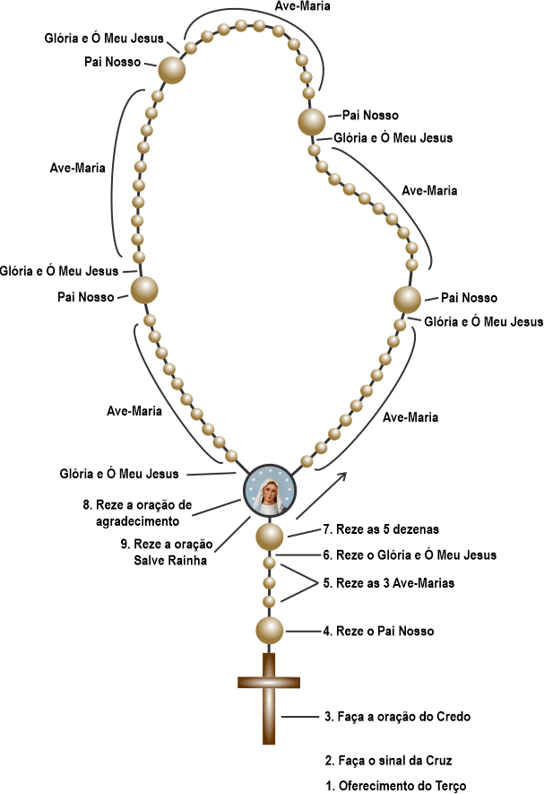

Como rezar o Terço
Passo a passo para quem está começando — ou recomeçando.
O que é o Santo Terço
O Santo Terço é uma oração contemplativa na qual meditamos, com a Virgem Maria, os principais mistérios da vida de Nosso Senhor Jesus Cristo. Enquanto rezamos a Ave-Maria, nosso intelecto vai contemplando os mistérios da salvação.
Mistérios de cada dia
Cada dia da semana corresponde a um conjunto de mistérios:
| Dia | Mistérios |
|---|---|
| Segunda e Sábado | Mistérios Gozosos |
| Terça e Sexta | Mistérios Dolorosos |
| Quarta e Domingo | Mistérios Gloriosos |
| Quinta | Mistérios Luminosos |
Disposição Interior
Antes de iniciar o Terço, procure um lugar silencioso. Coloque-se na presença de Deus. Faça o sinal da cruz com reverência e peça à Virgem Maria a graça de rezar com atenção, humildade e amor.
Passo a Passo do Terço

-
Faça o sinal da cruz: Em nome do Pai, do Filho e do Espírito Santo. Amém.
-
Reze o Credo.
Creio em Deus, Pai Todo-poderoso, Criador do céu e da terra, e em Jesus Cristo, seu único Filho, nosso Senhor, que foi concebido pelo Espírito Santo, e nasceu de Santa Maria Virgem; padeceu sob o poder de Pôncio Pilatos; foi crucificado, morto e sepultado. Desceu aos infernos; ao terceiro dia ressuscitou de entre os mortos; subiu aos céus, e está sentado à mão direita de Deus Pai Todo-poderoso, de onde há de vir para julgar os vivos e os mortos. Creio no Espírito Santo, na Santa Igreja Católica, na comunhão dos Santos, na remissão dos pecados, na ressurreição da carne, e na vida eterna. Amém. -
Reze um Pai-Nosso.
Pai Nosso que estais no Céu, santificado seja o Vosso nome. Venha a Nós o Vosso Reino. Seja feita a Vossa vontade assim na Terra como no Céu.
O pão nosso de cada dia nos dai hoje. Perdoai-nos as nossas dívidas, assim como nós perdoamos aos nossos devedores. E não nos deixeis cair em tentação, mas livrai-nos do mal. Amém.
-
Reze o Angelus ou apenas as 3 Ave-Marias, pedindo as virtudes da fé, esperança e caridade.
1. O anjo do Senhor anunciou a Maria, e Ela concebeu do Espírito Santo. Ave Maria, cheia de graça...
2. Eis aqui a Escrava do Senhor, faça-se em mim segundo a vossa palavra. Ave Maria, cheia de graça...
3. E o Verbo se fez carne, e habitou entre nós. Ave Maria, cheia de graça...
-
Reze um Glória ao Pai.
Glória ao Pai, e ao Filho e ao Espírito Santo. Como era no princípio, agora e sempre, pelos séculos dos séculos. Amém. -
Anuncie o mistério do dia e medite brevemente sobre ele.
-
Reze um Pai-Nosso.
-
Reze dez Ave-Marias, meditando o mistério anunciado.
-
Ao finalizar as dez Ave-Marias, reze o Glória ao Pai e a Oração de Fátima.
-
Repita este processo para os cinco mistérios.
Conclusão do Terço
Após os cinco mistérios, reza-se a Salve Rainha e as orações finais. Conclua agradecendo a Deus pelas graças recebidas e confiando-se à intercessão da Santíssima Virgem Maria.
Infinitas graças vos damos, ó Soberana Rainha, pelos benefícios que todos os dias recebemos de vossas mãos maternais. Dignai-vos, agora e para sempre tomar-nos debaixo do vosso poderoso amparo e para mais vos agradecer, vos saudamos com uma Salve Rainha:
Salve Rainha, Mãe de Misericórdia, vida, doçura e esperança nossa, salve! A vós bradamos, os degredados filhos de Eva. A vós suspiramos, gemendo e chorando neste vale de lágrimas. Eia, pois, Advogada nossa, esses vossos olhos misericordiosos a nós volvei; e depois deste desterro mostrai-nos Jesus, bendito fruto do vosso ventre, ó clemente, ó piedosa, ó doce sempre Virgem Maria.
V. Rogai por nós, Santa Mãe de Deus,
R. Para que sejamos dignos das promessas de Cristo.
Pronto para rezar? Medite cada Ave-Maria com imagens e textos.
Rezar o Rosário meditado